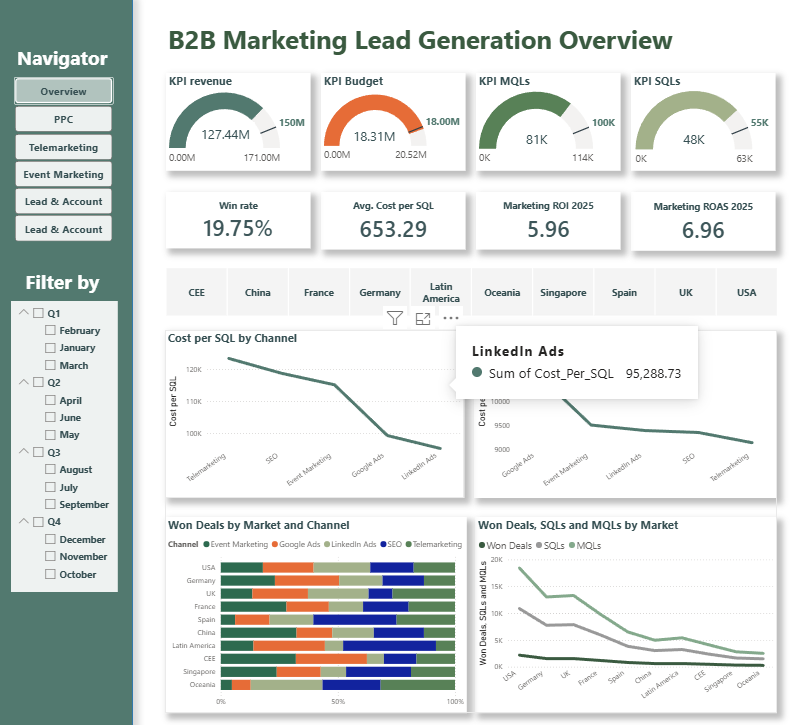
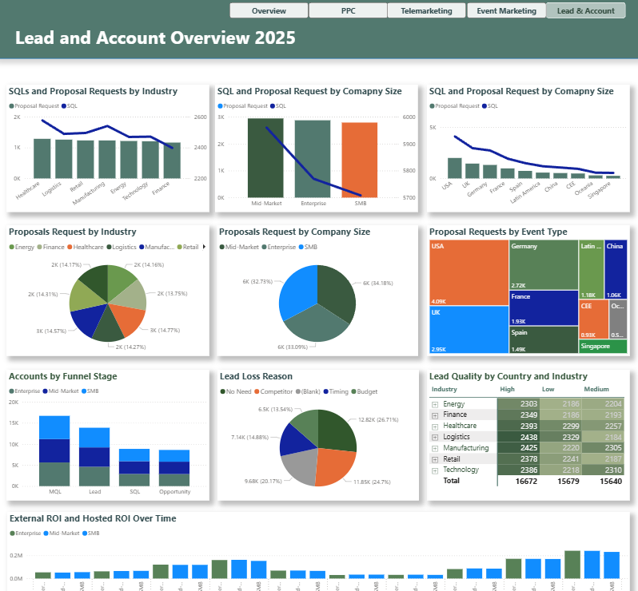
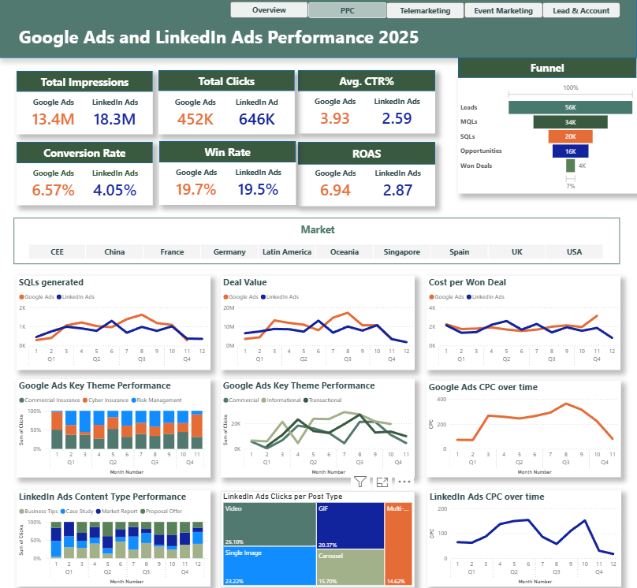
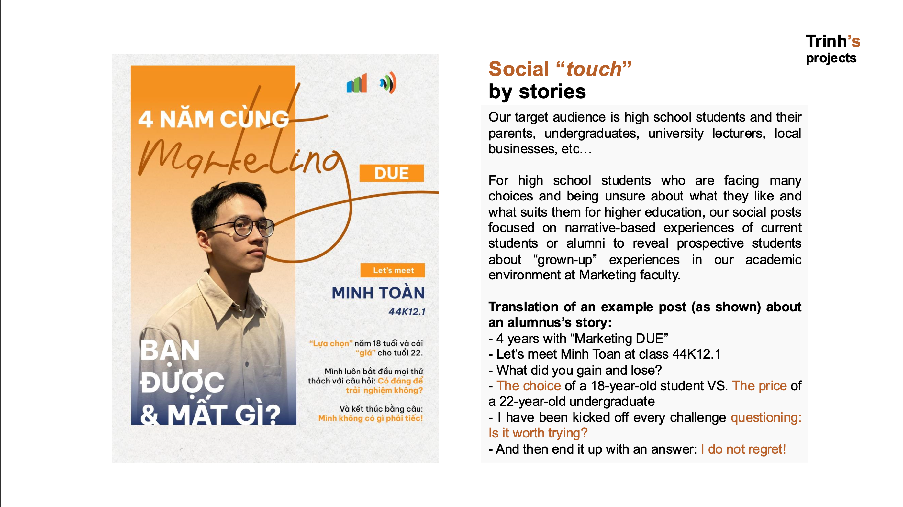
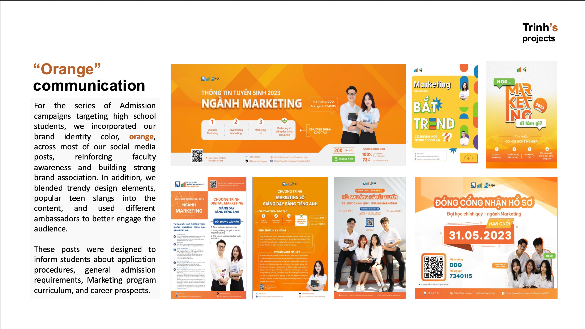
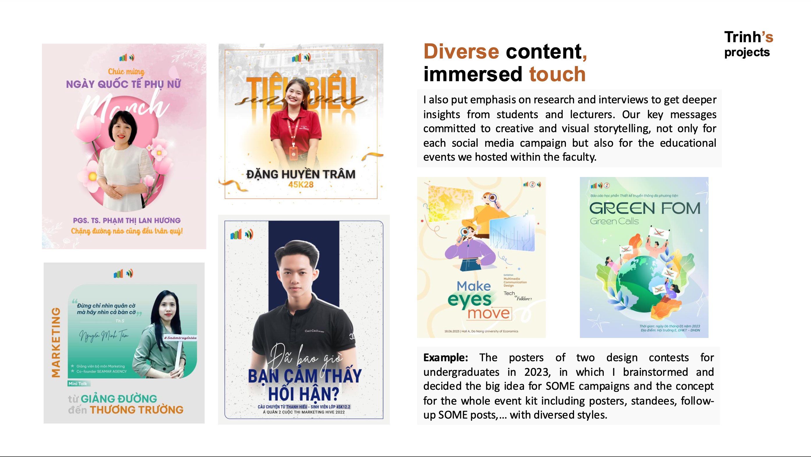
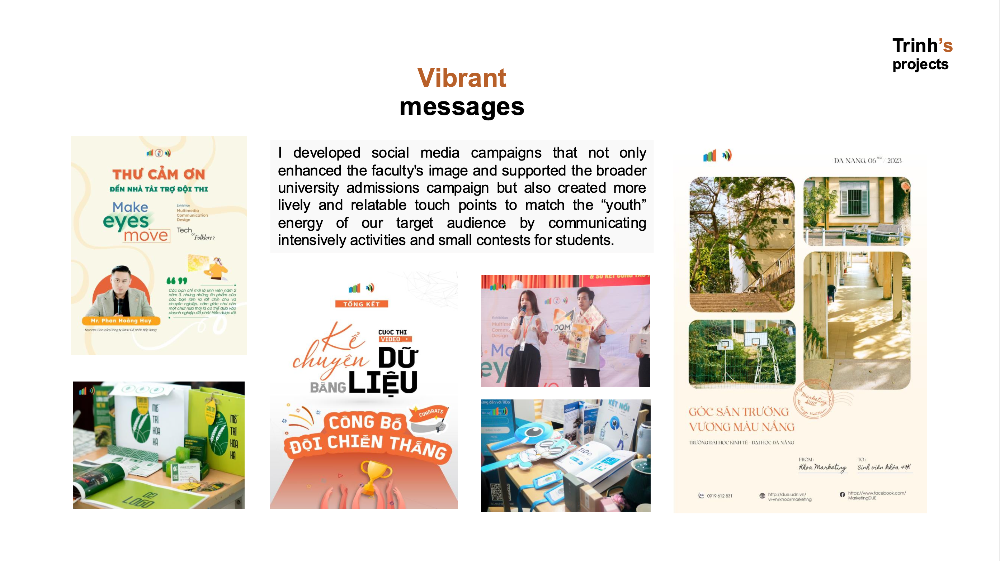
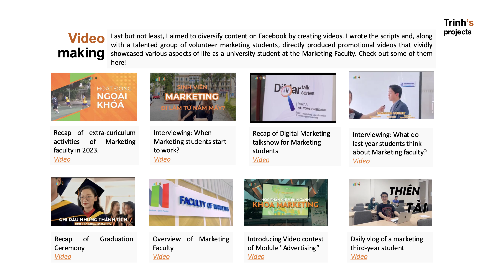

Every perspective reveals only part of a story.
For me, analysis is not only about finding answers. It is about asking better questions, exploring alternative perspectives, and connecting information in ways that reveal new possibilities.
Looking through a different lens often reveals assumptions, opportunities, and insights that might otherwise remain unseen.
What changes when we look at the same situation from a different angle?
Why was this choice made instead of another possibility?
What additional value can be created from information already available?
What processes, assumptions, and structures drive the outcome?
Question: What additional value could be created if competitor publications were analyzed not only as market information, but also as evidence of content strategy and thought leadership?
My team, Market Intelligence, monitors competitor websites and maintains a market intelligence database. While following the content team's discussions in Group Marketing & Communication meetings, I noticed a gap: the team's knowledge of what competitors publish on their websites, and how, was limited and scattered.
This was a self-initiated project, beyond my role, as I work in Market Intelligence and not in the content team. My goals were to give the content team a consistent view of competitor publishing strategies, to contribute to the performance of Group Marketing & Communication, and to deepen my knowledge of content marketing and my data analysis skills.
A self-initiated project translating business workflows into a structured analytical model.
Question: How can complex business workflows be translated into a data model that enables meaningful analysis, supports decision-making, and delivers valuable insights for stakeholders?



During a work project on telemarketing and marketing ROI, I interviewed marketing teams from units around the world. I found that some teams lacked tracking and measurement of their lead generation campaigns, and that there was no group-level overview of how leads are generated, nurtured and converted into business value. Data was managed locally and reported to the group separately, in different formats and with different KPIs.
I set out to design a syndicated database that lets the group monitor the lead generation campaigns of its local units, with a dashboard available to the whole organisation to follow each unit.
The dataset is fictional and created by me. It shows the ideal situation in which such data is available, and it let me demonstrate my data skills and show what information I would ask for to run root-cause analysis and what insights I could provide.
Next step: I plan to add lead lifecycle data from the CRM, so the model can also show how well sales and marketing collaborate and how much effort marketing puts into qualifying, nurturing, scoring and assigning leads to sales.
A communication project exploring how audience needs, behaviour and preferences can shape content and campaign decisions.
Question: How can audience insights be translated into more relevant content and communication touchpoints?





I worked full time at a faculty, where I led a team of around 30 volunteer students. The faculty wanted to connect with its target audience, high school students and undergraduates, and to reach the highest enrollment rate of the academic year.
I was responsible for planning and budgeting the faculty's communication campaigns and for leading the volunteer team that carried them out, so that the faculty would build its reputation and stay connected with prospective students. I also stepped in on operational work, such as designing posters, writing video plots and handling event logistics.
Automation, APIs, market intelligence workflows, data architecture, and decision-making processes.
kieutrinhdn99@gmail.com